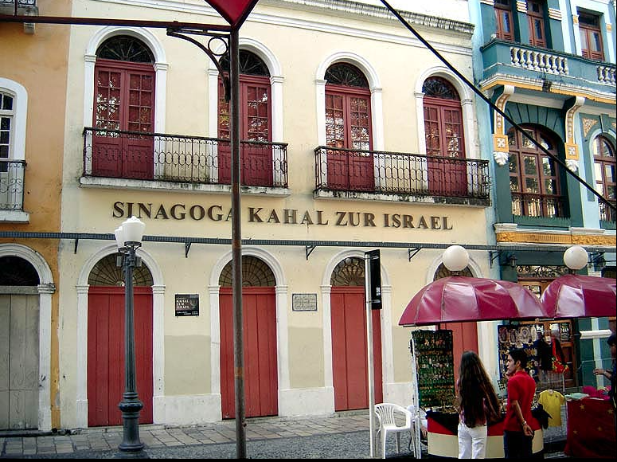

Imagem do Wikipedia
Considerada a primeira sinagoga das Américas, a Kahal Zur Israel é um marco histórico e cultural para a história judaica no Novo Mundo. Localizada na Rua do Bom Jesus, é um centro cultural e museu que destaca a contribuição dos judeus em Recife.
Paço do Frevo
Imagem do Instagram Paço do Frevo
Um espaço cultural dedicado à preservação e difusão do Frevo. No Paço, visitantes podem participar de oficinas e vivenciar essa expressão cultural vibrante, aprendendo sobre sua história em um ambiente interativo.